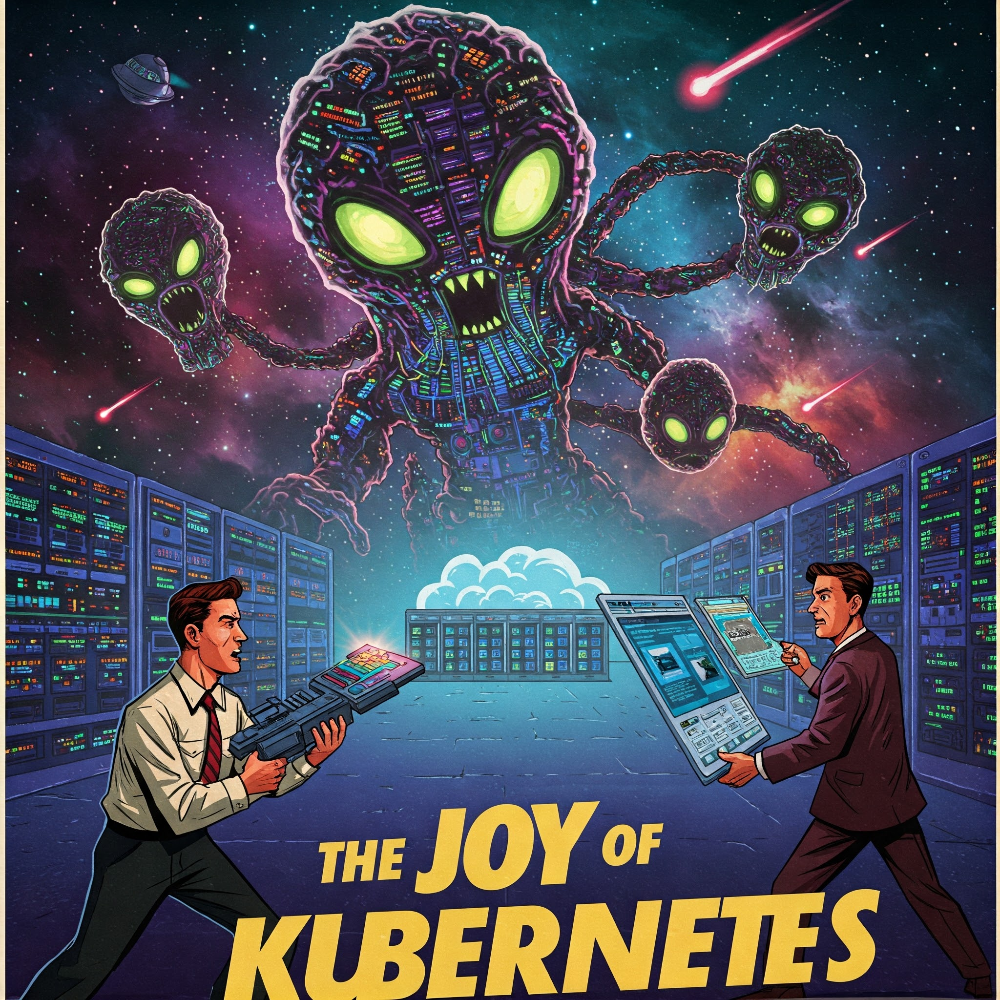

This page is a small testament to the adventure of learning and deploying applications on Kubernetes. It's running live from a K3s cluster on Hetzner Cloud!
Setting up the cluster, configuring networking with Traefik, handling SSL with Let's Encrypt, and deploying applications has been a fantastically painful learning experience. Kubernetes offers incredible power and flexibility for managing containerized applications at scale.
Stay tuned for more adventures!